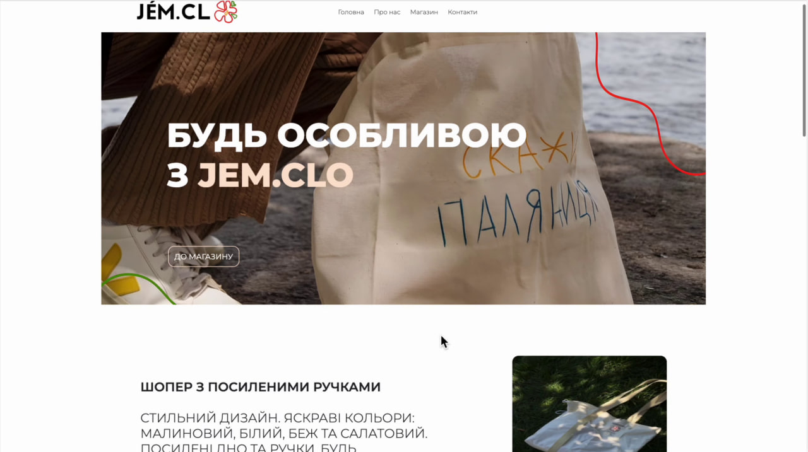
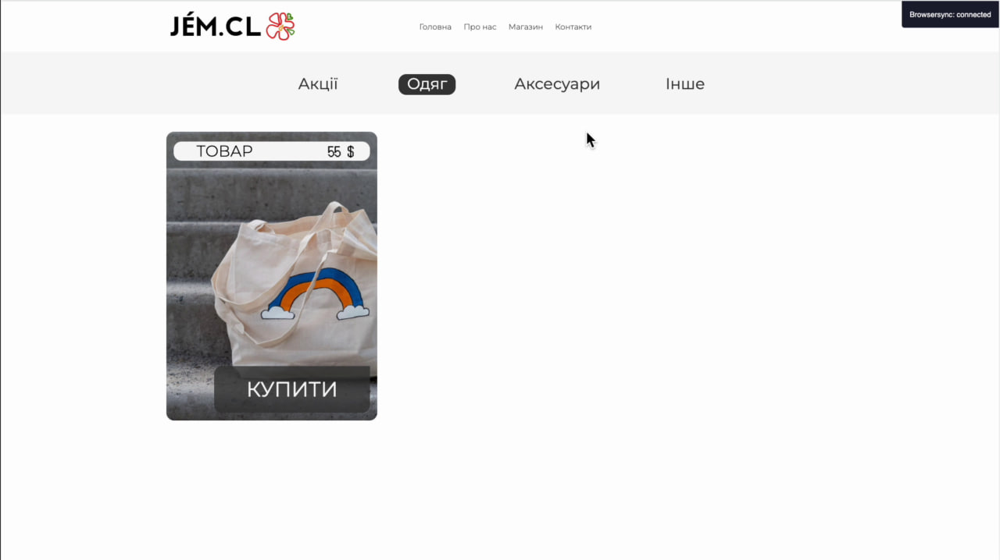
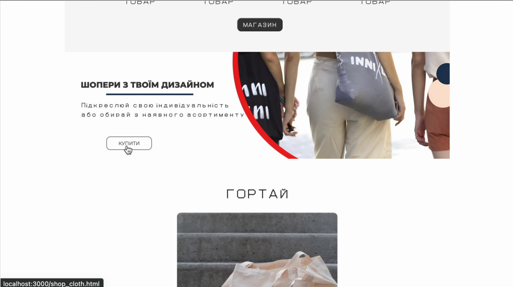

Про мене
Мене звати Данило, мені 21 рік.
Я студент 2-го курсу прикладних комп'ютерних технологій, також маю медичну освіту.
Вивчаю для себе світ IT технологій, веб-розробки, бекенду а також останнім часом поринув у розробку Telegram-ботів використовуючи php або python
Мої навички
HTML & CSS
Маю глибокі знання HTML і CSS, що дозволяє створювати естетичні та добре структуровані веб-сайти. Вмію розробляти респонсивний дизайн, використовуючи Flexbox та CSS Grid для створення гнучких і адаптивних макетів.
JavaScript
Маю високі навички у JavaScript, включаючи сучасні стандарти ES6+. Здатний до розробки інтерактивних інтерфейсів, використовуючи бібліотеки та фреймворки, такі як React та Vue.js.
Node.js
Вмію створювати веб-додатки з використанням Node.js, ефективно використовуючи його для розробки серверної логіки, створення API та взаємодії з базами даних.
React
Маю досвід роботи з React, здатний до створення складних і динамічних інтерфейсів, використовуючи компонентний підхід та управління станом за допомогою Redux або контексту.
WordPress
Володію навичками розробки тем та плагінів для WordPress, можу налаштовувати та оптимізувати сайти на базі цієї платформи, забезпечуючи їх високу продуктивність та безпеку.
Python
Маю досвід роботи з Python для розробки веб-додатків, аналізу даних та автоматизації задач. Здатний до розробки веб-серверів з використанням фреймворків, таких як Flask або Django.
PHP & MySQL
Володію навичками роботи з PHP та MySQL для створення динамічних веб-сайтів та взаємодії з базами даних. Маю досвід розробки ефективних запитів SQL та оптимізації баз даних.
Мої роботи
Перший створенний онлайн-магазин
  Досвід
-Фронт-енд
-Бек-енд
-Розробка примітивних СРМ-систем
-Налаштування серверів та крон-задач
-Робота з Wordpress та Elementort
-Створення та підтримка автоматичних процессів
-Досвід роботи з API
Контакти
Контакти:
oliinyk.danylo2002@gmail.com
Телеграм